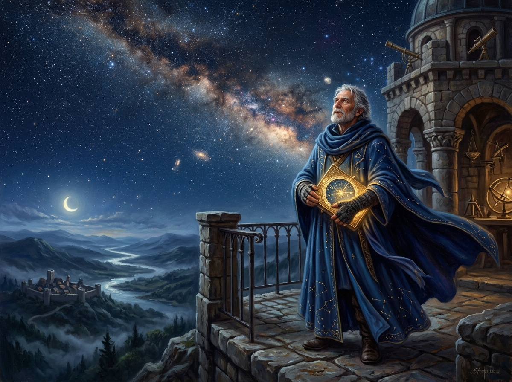

You looked into the deep night and traced the bloom of the Celestial Flower.
The light you connected left Deneb fifteen hundred years ago. It crossed through cold and silence, never knowing whose eyes would receive it. Some journeys take an eternity because what they carry is precious.
You have unlocked the First Anchor of the Sky. In your hands now rest the solitary keys of the Order's sacred script.